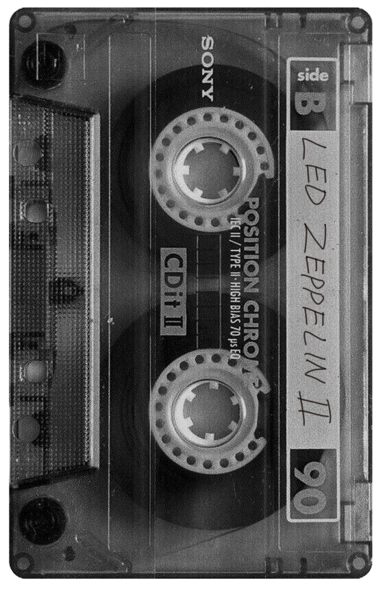
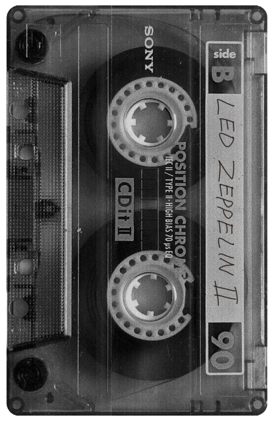

As a whole
Supernatural is my
perfect show: The calloused underbelly of America, urban folklore,
gore and horror, characters irrevocably severed from society,
incest subtext, Christian theology, and two super hot guys. And
the show itself may "bad" but what churns underneath the bad
acting and cheesy one-liners makes me rock fucking hard.
Dean Winchester
may be my character of all time. My madonna and my whore. My
dirtbitch. My sweetest sigh and brutal blade. He's overtly
masculine (actually painfully so) but paralleled and subtexted to
hell with femininity. Burdened with family - to live with a wife's
duty and mother's obligation, a son's need and a brother's trust.
Fated to a doomed love. Fated to live tragically and die
tragically. Fated to triumph but not before falling again and
again.
Disclaimer: I'm a spn purist - I believe the show should've ended
at season 5 and the sharp decline in quality after that finale
makes it nigh unwatchable. To me spn isn't worth watching past
season 6 (which gets a pass because there's just enough loin
tingling moments to get through). I wasn't really an og
Supernatural fan i.e. Superwholocker. I did watch a good bite of
it during the fandom peak out of obligation. It was a case of
right people wrong time but now the clocks are ticking in sync.